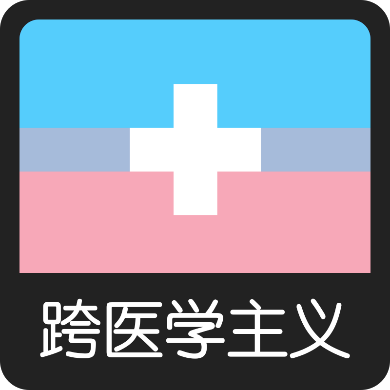
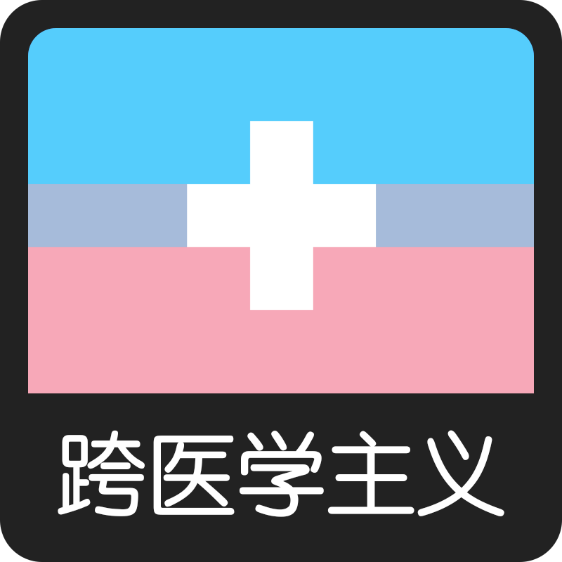
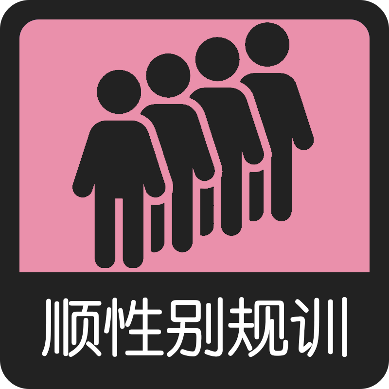
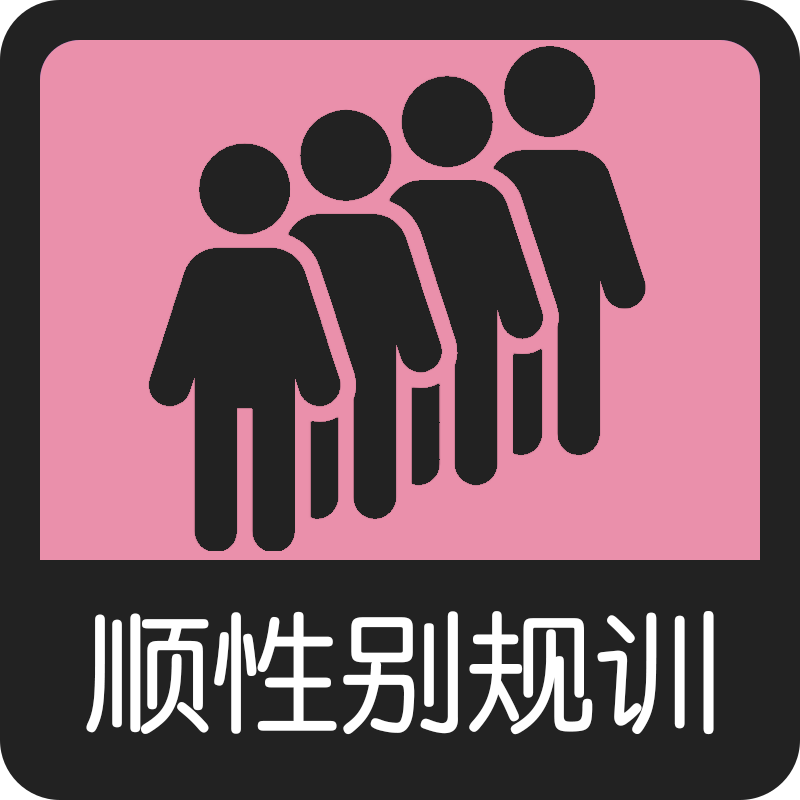
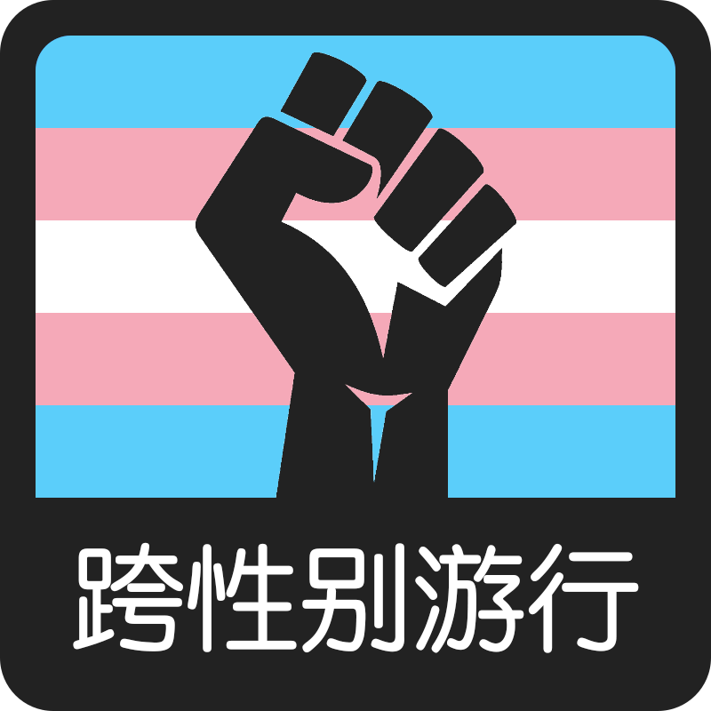
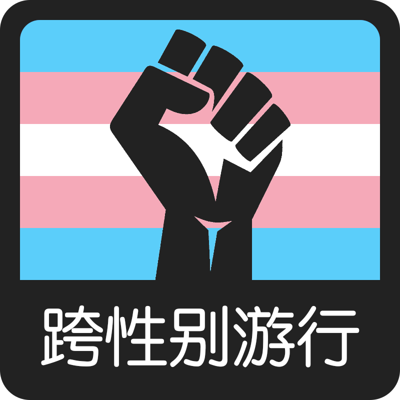

社区偏好
主义偏好
用药偏好
解放偏好
 

 



 

TransValues本质就是一个图一乐的测验，测验会用来对给定的八个不同的跨性别价值观分配百分比。
这些问题通常是为跨性别准备的，但是熟悉跨性别的顺性别应该也可以作答。
每个答案都会轻微影响分数。当测验结束时，您的答案将与每个值的最大可能值进行比较，从而为您匹配一个结果。
本测验总共题。
本汉化版对原测验进行了符合中文语境和理解的译制，尽可能保留原意的对测验中出现的英语梗进行了本土化适配。
TransValues是一个发布于2021年的测验，测验内容带有原作者的个人主义，本汉化版仅作翻译，不对选项权重进行修改。
推特用户：
例如中推跨圈。
匿名频道：
例如某TG频道。
跨医学主义：
认为是否为跨性别取决于经历过性别焦虑或接受过跨性别医疗。
自我身份认同：
与跨医学主义相反，即任何认为自己是跨性别的人都是跨性别。
非正规药物：
指无需正规用药处方就可以在网上买到的第三方激素药物，通常缺少安全保障，例如een。
正规医疗：
认为非正规药物是危险的，且处方药不应该在药店轻易买到，而是需要经过精神科医生评估后才能被给予。
顺性别规训：
鼓励跨性别假扮成异性，融入顺性别社会，以此来对抗恐跨行为。
跨性别游行：
跨性别如果想要摆脱压迫，就得采取激进的行动。